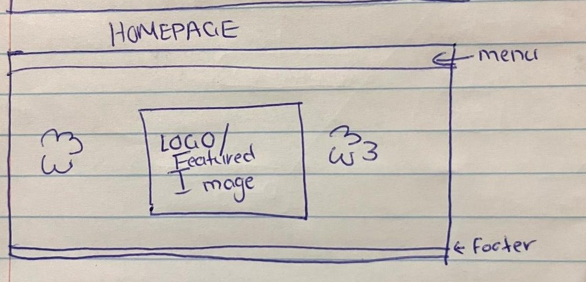
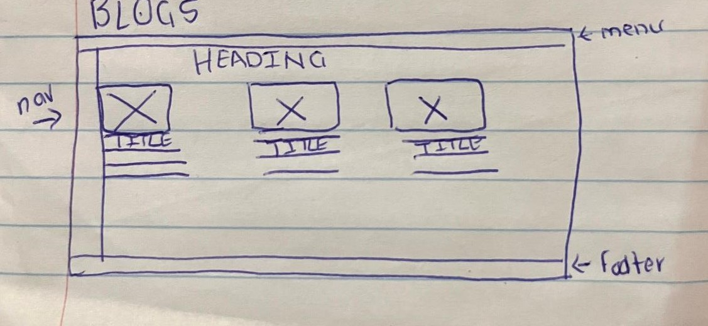
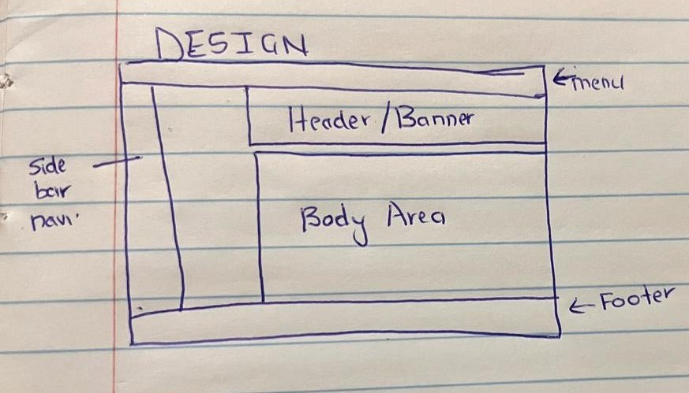

Thoughts and IxD Design
by Bahle Jacqueline (Jackie) Sibanda on
My primary goal for my website is to ensure it is easy to navigate, with all information clearly displayed for users. The design will be minimalistic, focusing on clean layouts that allow images and text to stand out without unnecessary distractions. I want users to engage with the Information Architecture system I set up, guiding them effortlessly through my content. Additionally, my goal is to make visitors feel interested and eager to return, ensuring they can easily keep up with new updates. More importantly, my website should be a reflection of who I am as an artist, allowing visitors to explore my writing, photography, and artwork in a structured and engaging way.
My target audience consists of people who are interested in my art and design journey, including young artists, tutors, and lecturers, as well as individuals looking for creative inspiration or information. Additionally, I want to attract users who are interested in building an online community, whether that means connecting with other artists or engaging in discussions about creative work.
-
To align my goals with user expectations, I need to create a balance between showcasing my work effectively and providing a smooth user experience. To achieve this, my website will include clear navigation elements that allow visitors to find specific content. Whether it’s my writing, photography, or art, quickly and intuitively. My galleries will be well-organized, ensuring users can browse my work without feeling overwhelmed. An About page will clearly communicate my artistic vision and goals, making it easy for tutors, lecturers, and other artists to understand my creative direction. Additionally, to foster a sense of community, I plan to include a comment form and possibly a comment section, allowing visitors to interact, share feedback, and engage in discussions.
-
To optimize user experience, I will incorporate Fitts' Law, ensuring that interactive elements like navigation buttons and links are large enough and positioned efficiently to minimize effort and enhance usability. Hick’s Law will guide my approach to navigation, meaning I will limit menu choices to avoid overwhelming users, ensuring they can quickly decide where to go next. Lastly, I will leverage the Zeigarnik Effect by designing my homepage and project pages in a way that leaves users intrigued and wanting to explore more, for example, by using teasers or previews of my work that encourage visitors to continue clicking through my portfolio. By carefully balancing clarity, engagement, and usability, my website will not only reflect my artistic identity but also provide an enjoyable and meaningful experience for my audience.
Progress and Reflections on my website
Overall I feel proud of the fact that I've managed to grasp html concepts easily as well as manage to link my website pages and have them work. At the moment I'm mostly struggling with the design process, particularly in balancing minimalism with the need to showcase my work effectively. Trying to strike the right visual hierachy, choosing the rigt=ht fonts and colour schemes, etc is taking a lot of time and thought.Images of my website wireframes so far
- 
- 
- 
To view more of the wireframes and insight on the design procoess, visit design